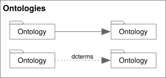
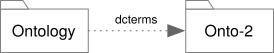

Ontology Relations
Corresponds to section 3.2 of the OWL 2 Structural Specification.
Ontology Nodes

Ontology Nodes and Edges
Ontology Node Properties
ontologyIRI-- the required ontology IRI.versionIRI-- the optional ontology version IRI.
Additionally, there are the following specific annotation properties;
owl:versionInfo, owl:priorVersion, owl:backwardCompatibleWith, and
owl:incompatibleWith.
Ontology Node Rules
- The node's shape must be a folder, a rectangle with a small tab on the top-left corner, with solid lines.
- The diagram above shows the preferred form with a sloped rectangular tab on the left.
- The alternate, acceptable, form with a plain rectangular tab on the right.
- An ontology node be the source of the following edges:
- Ontology imports.
- Ontology dependencies.
- General axioms.
- Annotation properties.
- An ontology node be the target of the following edges:
- Ontology imports.
- Ontology dependencies.
Imports
Ontology Imports
Ontology(
<http://www.example.com/importing-ontology>
Import( <http://www.example.com/my/2.0> )
...
)
Imports Rules
- The edge must be a solid line with a filled triangle at the target.
- The source and target must be Ontology nodes, and must be distinct.
- There must be at most one edge between any pair of ontology nodes.
- These edges have no labels.
Dependencies and Prefixes

Ontology Dependencies and Prefix Assignment
Prefix(
dcterms: = <http://purl.org/dc/terms/>
)
Ontology(
<http://www.example.com/ontology1>
Annotation( dcterms:title "An example" )
)
Note the example diagram also shows the annotation to show the usage of the declared prefix "dcterms".
Dependency and Prefix Rules
- The edge must be a dotted line with a filled triangle at the target.
- The source and target must be Ontology nodes, and must be distinct.
- The edge may have a label, all labels originating from the same source
ontology must be unique.
- As these are the prefix to qualified name it is not legal to include the
colon (
':', UnicodeU+003A) character in the name. - This implies there can be at most one unlabeled dependency edge.
- As these are the prefix to qualified name it is not legal to include the
colon (
Tool Notes
For Visual Navigation a navigable view of interconnected ontology nodes is a good way to understand the manner in which they are used as well as the popularity, or not, of those in your network. Additional graph metrics can help provide insights as well as simple visualization.
The folder shape must not be used to render a preview of the ontology diagram, given that we would encourage any non-trivial ontology to have any number of diagrams as different views into the same ontology. In this way the folder icon is chosen as a way to think of it as a collection of these views.
In reading an Ontology and finding either imports or prefix declarations it is possible, in fact preferrable to add a folder node, but may be not so preferrable to fetch the associated resource (especially not to do so transitively!). This means that tools should provide a way to represent ontology States; for example those that have been discovered but is not actually resolved, resolved and cached, and those moved from the cache to local a workspace for editing.